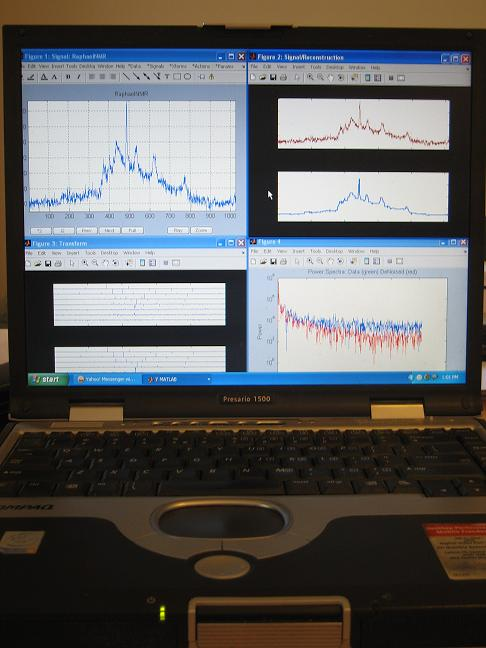

WAVELAB 850
Home Download Documentation Registration Links Contact Acknowledgements
|  |
This Version of Wavelab Supports Matlab 6.x or 7. If you have older
versions of Matlab please use: Older
version of Wavelab
We offer a uniform download format for the following platforms:
We provide detailed instructions for installation.
|
On most platforms, our installation procedure will automatically compile .mex files to accelerate certain key components of the Wavelab library. In case you do not have a Matlab MEX file compiler, we provide a library of precompiled executable MEX files for various platforms. The platforms we support include
If you find that your platform is not included here and you would like to help us to compile the mex source files, please contact us by email.